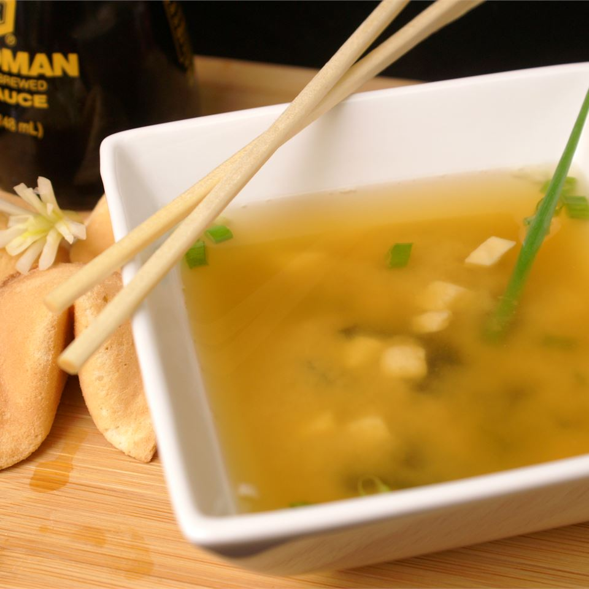

Miso Soup

Description
Dashi is a basic stock used in Japanese cooking which is made by boiling dried kelp (seaweed) and dried bonito (fish). Instant dashi granules are sold in conveniently-sized jars or packets and vary in strength. Add more dashi to your soup if you want a stronger stock. You can use yellow, white or red miso paste for this soup. Yellow miso is sweet and creamy, red miso is stronger and saltier.
Ingredients
- 2 teaspoons dashi granules
- 4 cups water
- 3 tablespoons miso paste
- 1 (8 ounce) package silken tofu, diced
- 2 green onions, sliced diagonally into 1/2 inch pieces
Steps
- In a medium saucepan over medium-high heat, combine dashi granules and water; bring to a boil. Reduce heat to medium, and whisk in the miso paste. Stir in tofu. Separate the layers of the green onions, and add them to the soup. Simmer gently for 2 to 3 minutes before serving.